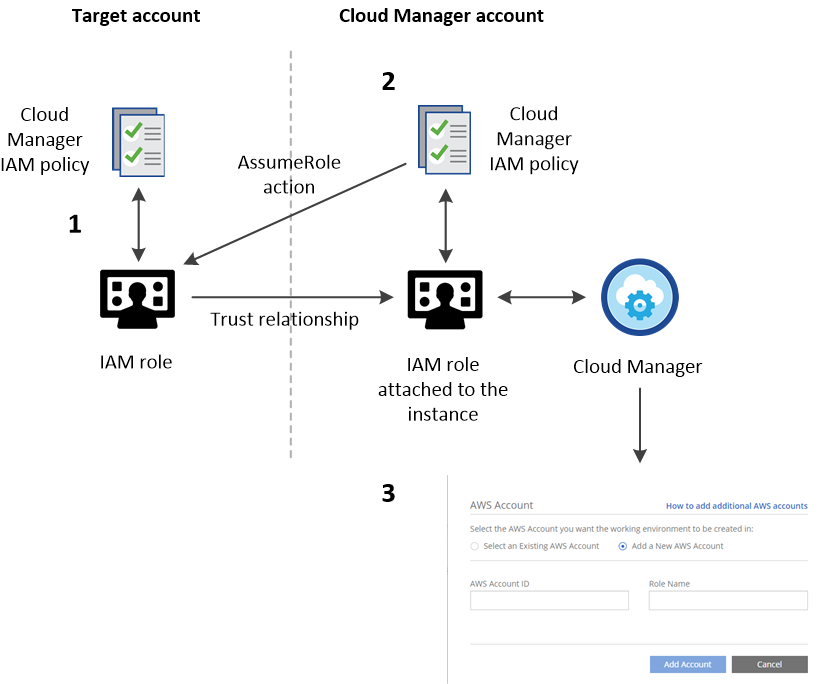
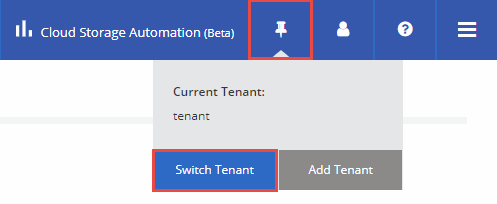
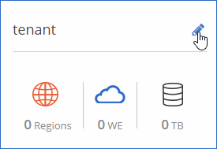

Go to the docs for the latest release.
Setting up Cloud Manager
|
▾ Download as PDF
Contributors
You can start creating Cloud Volumes ONTAP systems right after you deploy Cloud Manager. However, you might want to perform additional setup first by setting up the AWS Key Management Service, installing an HTTPS certificate, and more.
- Adding additional Azure subscriptions to Cloud Manager
- Adding additional AWS accounts to Cloud Manager
- Setting up the AWS KMS
- Installing an HTTPS certificate for secure access
- Adding users to Cloud Manager
- Linking tenants to a NetApp Support Site account
- Setting up AWS billing and cost management for Cloud Manager
Adding additional Azure subscriptions to Cloud Manager
If you want to deploy Cloud Volumes ONTAP systems in multiple Azure subscriptions, then you must add permissions for those subscriptions.
The following steps apply if you deployed Cloud Manager from NetApp Cloud Central. When you deployed Cloud Manager, Cloud Central created the OnCommand Cloud Manager Operator role and assigned it to the Cloud Manager virtual machine.
-
Log in to the Azure portal.
-
Open the Subscriptions service and then select the subscription in which you want to deploy Cloud Volumes ONTAP systems.
-
Click Access control (IAM).
-
Click Add and then add the permissions:
-
Select the OnCommand Cloud Manager Operator role.
-
Assign access to a Virtual Machine.
-
Select the subscription in which the Cloud Manager virtual machine was created.
-
Select the Cloud Manager virtual machine.
-
Click Save.
-
-
Repeat these steps for additional subscriptions.
When you create a new working environment, you should now have the ability to select from multiple Azure subscriptions.
Adding additional AWS accounts to Cloud Manager
When Cloud Manager is associated with an IAM role, it deploys Cloud Volumes ONTAP in the AWS account from which the Cloud Manager instance was created. If you want to deploy Cloud Volumes ONTAP in other AWS accounts, then you must delegate access across accounts.
The following image depicts the steps that you must complete below.

-
Create an IAM role in the AWS account in which you want to deploy Cloud Volumes ONTAP.
The role must meet the following requirements:
-
It must adhere to Cloud Manager IAM policy requirements.
-
It must have a trust relationship that allows the IAM role associated with the Cloud Manager instance to assume this new role.
-
-
Add a permission to the Cloud Manager IAM role policy that enables it to assume the IAM role that you just created.
You can find the name of the Cloud Manager IAM role from the EC2 console by viewing a description of the instance. -
When you create a new working environment, add the target account in the Details & Credentials page by specifying the AWS account ID of the target account and the name of the IAM role in that account.
| As always, you must ensure network connectivity between Cloud Manager and the location of the target Cloud Volumes ONTAP systems. This is important when the instances are created by different accounts. |
For additional background about this process, refer to AWS Documentation: Tutorial: Delegate Access Across AWS Accounts Using IAM Roles. In this tutorial, the production account is similar to the target account and the development account is similar to the Cloud Manager account.
If you have additional accounts, complete these steps for those accounts, as well.
Setting up the AWS KMS
If you want to use Amazon encryption with Cloud Volumes ONTAP, then you must set up the AWS Key Management Service (KMS).
-
Ensure that an active CMK exists in your account.
The CMK can be an AWS-managed CMK or a customer-managed CMK.
-
Add the IAM role associated with the Cloud Manager instance to the list of key users for a CMK.
This gives Cloud Manager permissions to use the CMK with Cloud Volumes ONTAP.
Installing an HTTPS certificate for secure access
By default, Cloud Manager uses a self-signed certificate for HTTPS access to the web console. You can install a certificate signed by a certificate authority (CA), which provides better security protection than a self-signed certificate.
-
In the upper right of the Cloud Manager console, click the task drop-down list, and then select HTTPS Setup.
-
In the HTTPS Setup page, install a certificate by generating a certificate signing request (CSR) or by installing your own CA-signed certificate:
Option Description Generate a CSR
-
Enter the host name or DNS of the Cloud Manager host (its Common Name), and then click Generate CSR.
Cloud Manager displays a certificate signing request.
-
Use the CSR to submit an SSL certificate request to a CA.
The certificate must use the Privacy Enhanced Mail (PEM) Base-64 encoded X.509 format.
-
Copy the contents of the signed certificate, paste it in the Certificate field, and then click Install.
Install your own CA-signed certificate
-
Select Install CA-signed certificate.
-
Load both the certificate file and the private key and then click Install.
The certificate must use the Privacy Enhanced Mail (PEM) Base-64 encoded X.509 format.
-
Cloud Manager now uses the CA-signed certificate to provide secure HTTPS access. The following image shows a Cloud Manager system that is configured for secure access:
Adding users to Cloud Manager
If additional users need to use your Cloud Manager system, they must sign up for an account in NetApp Cloud Central. You can then add the users to Cloud Manager.
-
If the user does not yet have an account in NetApp Cloud Central, send them a link to your Cloud Manager system and have them sign up.
Wait until the user confirms that they have signed up for an account.
-
In Cloud Manager, click the user icon and then click View Users.
-
Click New User.
-
Enter the email address associated with the user account, select a role, and click Add.
Inform the user that they can now log in to the Cloud Manager system.
Linking tenants to a NetApp Support Site account
You should link a tenant to a NetApp Support Site account so Cloud Manager can manage licenses for BYOL systems, register pay-as-you-go instances for support, and upgrade Cloud Volumes ONTAP software. For more information about these benefits, watch this video.
Each NetApp Support Site account that you link to a tenant must meet the following requirements:
-
The account must be a NetApp customer-level account (not a guest or temp account).
-
If you purchased a secure BYOL subscription, then a secure NetApp Support Site account is required to upload the license file.
Contact your NetApp account team for further information about secure BYOL subscriptions.
-
The account must be authorized to access the serial numbers of any BYOL systems deployed in the tenant.
If you do not have an account, you can create one from the NetApp Support Site.
-
Click the tenants icon and then click Switch Tenant.

-
Click the edit icon for the tenant that you want to link to a NetApp Support Site account.

-
Click Change NSS account.
-
Enter the user name and password for the account and click Save.
Cloud Manager registers all existing and future Cloud Volumes ONTAP systems in the tenant with NetApp support.
Setting up AWS billing and cost management for Cloud Manager
Cloud Manager can display the monthly compute and storage costs associated with running Cloud Volumes ONTAP in AWS. Before Cloud Manager can display the costs, users of AWS payer accounts must set up AWS to store billing reports in an S3 bucket, Cloud Manager must have permissions to access that S3 bucket, and AWS report tags must be enabled after you launch your first Cloud Volumes ONTAP instance.
You must have granted AWS permissions to Cloud Manager so it can access an S3 bucket. For details, see Granting AWS permissions to Cloud Manager.
Users of AWS payer accounts must set up AWS to store billing reports in an S3 bucket. Cloud Manager uses the information from the reports to show monthly compute and storage costs associated with a Cloud Volumes ONTAP instance, as well as storage cost savings from NetApp product efficiency features (if they are enabled). For an example, see see Monitoring AWS storage and compute costs.
-
Go to the Amazon S3 console and set up an S3 bucket for the detailed billing reports:
-
Create an S3 bucket.
-
Apply a resource-based bucket policy to the S3 bucket to allow Billing and Cost Management to deposit the billing reports into the S3 bucket.
For details about using an S3 bucket for detailed billing reports and to use an example bucket policy, see AWS Documentation: Understand Your Usage with Detailed Billing Reports.
-
-
From the Billing and Cost Management console, go to Preferences and enable the reports:
-
Enable Receive Billing Reports and specify the S3 bucket.
-
Enable Cost allocation report.
-
-
When you set up a user account in Cloud Manager, specify the S3 bucket that you created.
If you grant AWS permissions to Cloud Manager by specifying AWS keys, you must set up a Cloud Manager user account by specifying AWS keys for an IAM user created under the payer account or the AWS keys for the payer account itself. -
After you launch your first Cloud Volumes ONTAP instance, go back to Billing and Cost Management Preferences, click Manage report tags, and enable the WorkingEnvironmentId tag.
This tag is not available in AWS until you create your first Cloud Volumes ONTAP working environment using any account under the AWS payer account.
Cloud Manager updates the cost information at each 12-hour polling interval.
Repeat these steps for other AWS payer accounts for which cost reporting is needed. For details about how to view the cost information, see Monitoring AWS storage and compute costs.
 Edit on GitHub
Edit on GitHub